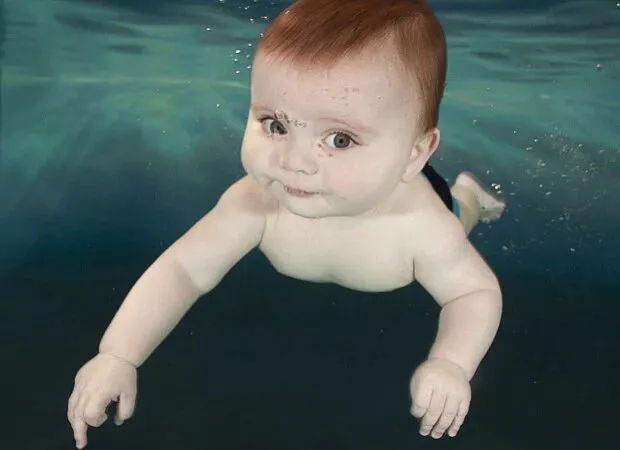
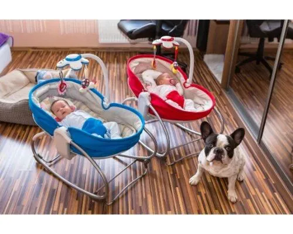

关注我们，全面了解双胞胎育儿知识
文|圆圈妈
网图|侵删
【01】
今天刷微博看到一段话特别有意思，原文如下：
哈佛大学一项研究指出，婴儿夜间啼哭要求喂奶，并非真的需要喝奶，而很有可能是为了让父母更加劳累、降低再生孩子的几率，这样没有弟弟妹妹，自己的生存几率就会增高。这是采访数千名婴儿得出的结论！
甚至有网友神回复：
进化心理学。。。真的是有道理的，包括新生儿一开始都长得像爸爸，因为怕被怀疑不是爸爸的孩子，被杀死。（这脑洞…）这都是人类原始的本能，是符合原始人的生活境况的，因为人的进化太慢，赶不上人类社会变化的速度。
笑完之后，我突然想举双手双脚赞成。且不说这是个搞笑段子还是未经证实的研究，也不去深究“采访数千名婴儿”是怎么办到的，婴儿夜间啼哭的原因千万种，谁知道是哪种。
图片来源于BBC纪录片《婴儿的秘密》
这种求生本能性质的啼哭，也不是不无道理的，经历过夜哭郎双胞胎的几番折磨，我更加确定，“我哭故我在”是双胞胎小婴儿求生技巧之一，只是这点小心机让众多宝爸宝妈们为之恼火一时，炸毛无数。
今天的推文是跟小伙伴们一起吐槽双胞胎宝宝经常半夜啼哭那些破事！
【02】
经常听到有宝妈说她家宝宝从出生第一天开始就能一觉睡到天亮，很少哭闹，我觉得此人最好不要在我面前出现了，因为我有想掐人的冲动。
家有两枚双胞胎心机BOY，很难让人冷静下来做个守法公民。
圆圈兄弟从胎动开始就不让人省心，时常在某个月圆之夜或者夜黑风高的晚上，开启子宫地盘抢夺大战，肚皮经常是左凸右凹的异形状态…那时候就有预感，这两货绝非善类！
果然，出生后片刻没有安宁！
不分昼夜，不分场合，上不封顶，无限叠加地哭，饿了哭，渴了哭，醒了哭，尿了哭，拉了哭，…..了哭，然后这个哭，另外一个马上跟着哭，加倍！加倍！再加倍….
每次他们哭，我就会开启“后妈”模式，脑海里冒出很多恶毒的念头...
这个崽扔到床底下，那个崽从窗户塞出去，
这个崽丢到垃圾袋，那个崽关进储物室，
或者干脆一个金箍棒敲晕，像打地鼠一样，哭一个，敲一个，直到不再哭为止….
3个月，睡眠问题有点改善。注意，只是稍微有点起色而已！晚上哄睡基本没有赴刑场的痛苦，我和队友人手一只崽，抱着躺在摇摇椅上，让其趴在大人的胸口上，晃几下就睡了。（不要告诉我其实应该放他们去床上睡，我不想听...）
夜里也不再频繁哭醒，即便偶尔哼哼唧唧，只需要轻拍下后背，基本上能糊弄过去，最阿弥陀佛的就是，互相干扰的情况减少了！
但只是相对月子期间，闹腾力度有点歇菜而已，睡眠依旧没有规律可言，想要达到成年人雷打不动的睡功，还隔着一个太平洋！
有时候3个小时就要喝奶，要是没有满足或者骗他们喂的是水，就会哭得更凶，非得逼着屋里的一群人起来烧水，洗奶瓶，冲奶粉，抱着喂…
喝完奶了还不肯睡，眼睛贼溜溜地转，看你没反应就朝你吐舌头吹泡泡，再没反应就打挺身子，双腿使劲蹬，反正蹬到你有反应为止！
有时候他们半夜醒来，什么事也没有，没有屎尿，甚至屁也不放一个，看着也不饿，就是莫名其妙哭，抱起来走动下就高兴，不一会儿就打哈欠趴在肩膀上睡了，但是刚挨着床边，马上就哭醒，比高灵敏的传感器还要精准！
我和队友时常在黑夜里抱着俩娃想放放不下，想睡睡不得，只能在黑暗中对视着，摇头苦笑，彼此都深刻意识到这手上抱的不是娃，而是两枚地雷！这一醒一哭，威力可秒杀全屋人！
【03】
《斯波克父母经》一书中提到，
有些宝宝总喜欢半夜啼哭，多半是父母高度警觉造成的，在这背后是他们的焦虑和内疚的感觉！
仔细检讨下我们为何会被他们的半夜啼哭折磨得差点失心疯，已经满3个月了，还是睡渣两枚，夜哭郎两只，可能多半原因是自己作的！
我焦虑的是担心一个哭醒后把另外一个吵醒了，内疚的是害怕面对两个一起哭不知该抱哪个那种绝望感。
曾经多次领教过一个哭把另一个吵醒，最后一起哭的混乱局面，总是想起来就心有余悸，于是每次只要其中一个崽有点风吹草动就会提高警惕，剑拔弩张。
圆圈跟我们同床睡，他们稍微变换下睡姿都能让我们一个激灵从床上弹起来，有时候我们可以成功干预（指的是不让他的哭影响到另一个睡着的崽），但更多时候，我们会判断失误，以至于他们本来不需要被抱起，本来可以靠自己的力量重新入睡，结果被我们的过度担心给搅黄了！
在此提醒，不管双胞胎是跟大人一起睡还是独立小床睡，当其中一个双胞胎宝宝在睡眠中有发出哼哼唧唧的声音，似乎要开始抽泣时，不必过早地开灯把他抱起，而是在黑暗中稍微等待下，屏住呼吸，沉住气，多点耐心观察，看会不会继续熟睡。
如果你的出发点跟我一样，在等待过程中担心一个哭把另一个吵醒，那大可不必如此！
要相信，他们在子宫内就已经彼此适应了对方，只是现在换了个环境，还需要点时间在新环境下适应彼此的存在，刚开始的相互干扰必定是在所难免的，这兴许就是他们在新环境下正努力尝试着寻找对方熟悉的气息，而惯用的做法就是：哭！用哭去试探对方的存在！
若是无可避免地哭醒了，那就及时地安抚，实在哭大了，就带离卧室，暂且回避。
你就赌一赌呗，单车变摩托，摩托变玛莎拉蒂！也许大概率是不用抱起安抚就能顺利接觉，还能促进他们睡整夜觉！
每个小婴儿对父母的情绪感觉都是极为敏感的，我们大人所表现出来的焦虑，烦躁，内疚等所有情绪都会被他们感知到，这会引起宝宝更多不安。
倘若我们对双胞胎宝宝的哭声有求必应，那会让他们越来越觉得自己拥有控制父母的力量，于是就更加放肆地哭！
若你面对时常半夜啼哭的双胞胎宝宝，所有办法用尽依然不奏效时，不妨退一步，给你们娘仨彼此一个喘气的空间，你自己确定调整好了，他们俩也哭累了，再开始下一回合的睡眠博弈！
有句话说的极是，养娃不易，心大方能长命！所谓的“心大”就是放下焦虑的包袱，抛开内心的愧疚感！不就是两只四角吞金兽嘛，能有啥能耐啊，看我的！
-END-
今日互动话题
#你家有双胞胎心机崽吗？#
评论区聊一聊呗！
微信公众号：孖仔帮
ID : twinsbang
专注双胞胎孕育，养育，教育经验分享
@www.sgguy.com
扫码关注我们
我知道你在看哟


